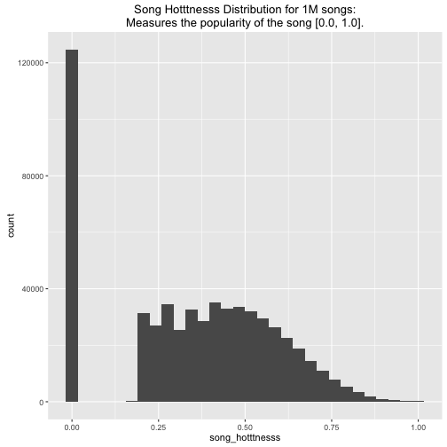
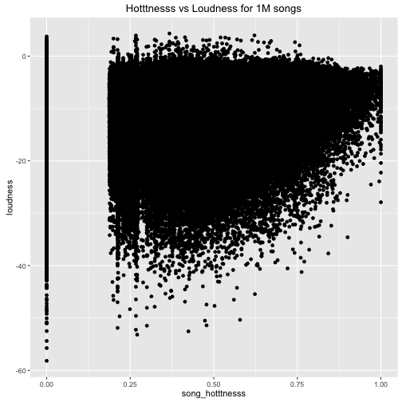

- Create a song recommender using metadata from the Million Song Dataset.
- Create a song recommender demo using R and Shiny
Prince Song Recommender
Building a song recommender using the Million Song Dataset
Telvis Calhoun
Research Engineer
Goals
Getting and Cleaning the Data
- The entire dataset is 280GB and Stored in Amazon S3 in HDF5 format.
- We extracted some HDF5 fields to a serialized R file containing the features.
df <- readRDS("data/songs.rds")
names(df)
## [1] "artist_name" "title"
## [3] "release" "song_hotttnesss"
## [5] "tempo" "loudness"
## [7] "energy" "danceability"
## [9] "duration" "artist_familiarity"
## [11] "artist_hotttnesss" "artist_latitude"
## [13] "artist_location" "artist_longitude"
## [15] "end_of_fade_in" "key"
## [17] "key_confidence" "song_id"
## [19] "start_of_fade_out" "time_signature"
## [21] "time_signature_confidence" "track_id"
Feature Selection


Recommender
- We use the
song_hotttnesssandloudnessas numeric features to model songs in a 2-dimensional space. - A user can query the recommender by selecting values for
song_hotttnesssandloudness - The recommender calculates the 5 closest songs in the 2D space using a euclidean distance metric.

Prince Song Recommender
- We build a prototype that uses 25 of the 1 million songs.
- The 25 songs are recorded by US recording artist 'Prince'
- We built a Shiny App that demonstrates the recommender - Click here to try it!